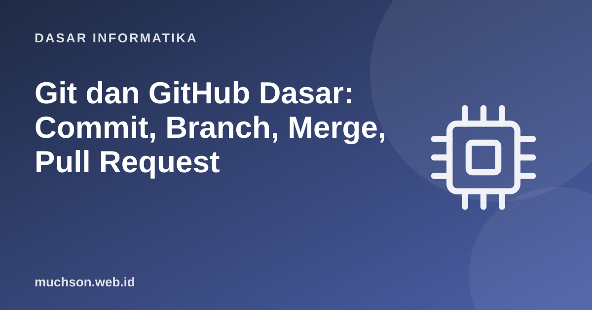

Beranda › Artikel › Dasar Informatika
Dasar InformatikaGit dan GitHub Dasar: Commit, Branch, Merge, Pull Request
Pernahkah memiliki berkas "laporan_final_v2_revisi_beneran_final.docx"? Git menyelesaikan masalah itu untuk kode: setiap perubahan tercatat, dapat dibandingkan dan dibatalkan, dan banyak orang dapat bekerja serentak tanpa saling menimpa. Hampir semua tim perangkat lunak memakainya, jadi ini keterampilan dasar bagi profesional informatika.
Sebaiknya sudah paham: command line dasar

Setelah membaca dan mencoba materi ini, Anda mampu:
- menjelaskan repositori, commit, working directory, staging area, dan riwayat
- memakai init, add, commit, status, log, diff
- membuat dan menggabungkan branch serta menyelesaikan konflik
- memakai remote: clone, push, pull, fetch
- mengikuti alur kerja pull request dan menulis commit message yang baik
Model mental
Alur dasar
$ git config --global user.name "Nama Anda"
$ git config --global user.email "anda@contoh.id"
$ git init # mulai repositori di folder ini
$ git status # apa yang berubah?
$ git add README.md # masukkan ke staging (atau: git add .)
$ git commit -m "Tambah README dengan petunjuk instalasi"
$ git log --oneline # riwayat ringkas
a1b2c3d Tambah README dengan petunjuk instalasi
$ git diff # perubahan yang belum di-stage
$ git diff --staged # perubahan yang sudah di-stageTulis pesan commit yang menjawab "mengapa". Format umum: baris pertama ringkas dalam bentuk perintah (±50 karakter), baris kosong, lalu penjelasan bila perlu. Contoh baik: "Batasi percobaan login 5 kali untuk mencegah serangan brute force". Contoh buruk: "fix", "update", "asdf".
Branch: cabang kerja yang murah
Branch adalah penunjuk bergerak ke sebuah commit. Membuatnya hampir gratis, jadi alur modern memakainya untuk setiap fitur atau perbaikan.
$ git switch -c fitur/login # buat dan pindah ke branch baru
... edit, add, commit ...
$ git switch main # kembali ke main
$ git merge fitur/login # gabungkan
$ git branch -d fitur/login # hapus branch yang sudah digabung
$ git branch # daftar branch (tanda * = yang aktif)Konflik merge
Konflik terjadi saat dua branch mengubah baris yang sama dan Git tidak dapat memilih. Git menandai bagian yang bertabrakan dan meminta Anda memutuskan.
<<<<<<< HEAD
Batas percobaan login: 3 kali
=======
Batas percobaan login: 5 kali
>>>>>>> fitur/login- Buka berkas yang berkonflik dan putuskan isi akhirnya (gabungan atau salah satu).
- Hapus tiga penanda
<<<<<<<,=======,>>>>>>>. - Jalankan
git adduntuk berkas itu. - Jalankan
git commituntuk menyelesaikan merge (ataugit merge --abortuntuk membatalkan).
Remote dan GitHub
$ git clone https://github.com/pengguna/proyek.git # salin repositori beserta riwayatnya
$ git remote -v # lihat alamat remote (biasanya bernama origin)
$ git push -u origin fitur/login # kirim branch ke GitHub
$ git fetch # ambil pembaruan tanpa menggabungkan
$ git pull # fetch + merge perubahan terbaruAlur pull request
Membatalkan dan memulihkan
| Situasi | Perintah | Catatan |
|---|---|---|
| Buang perubahan pada satu berkas (belum di-stage) | git restore berkas | Perubahan hilang permanen |
| Keluarkan berkas dari staging | git restore --staged berkas | Perubahan tetap di working directory |
| Perbaiki pesan commit terakhir (belum di-push) | git commit --amend | Jangan amend commit yang sudah dibagikan |
| Batalkan commit yang sudah dibagikan | git revert | Membuat commit baru yang membalik; aman bagi riwayat bersama |
| Lihat keadaan repo sebelumnya | git reflog | Penyelamat saat salah langkah: menampilkan posisi HEAD sebelumnya |
Aturan emas: jangan menulis ulang riwayat yang sudah di-push dan dipakai orang lain (force push, rebase branch bersama). Untuk membatalkan commit yang telah dibagikan, pakai git revert.
Berkas yang tidak boleh masuk Git
# .gitignore
node_modules/
.env # rahasia: kunci API, kata sandi basis data
*.log
.DS_Store
dist/1. Tulis urutan perintah untuk membuat repositori baru, menambah satu berkas, dan commit.
2. Apa bedanya git fetch dan git pull?
3. Anda menemukan kunci API ter-commit di repositori publik. Apa langkahnya?
4. Mengapa membuat branch untuk setiap fitur?
- Git menyimpan riwayat sebagai potret commit; area: working directory, staging, repositori.
- Branch murah; merge menggabungkan; konflik diselesaikan manual.
- Remote (GitHub): clone, push, fetch, pull; pull request untuk tinjauan.
- Tulis commit message bermakna; jangan commit rahasia; jangan tulis ulang riwayat bersama.
Tanya jawab
Apa bedanya Git dan GitHub?
Perlukah menguasai rebase?
Bagaimana belajar lebih dalam?
Referensi
- Scott Chacon dan Ben Straub, Pro Git (gratis)
- Git Documentation
- GitHub Docs: About pull requests
- Learn Git Branching (latihan interaktif)